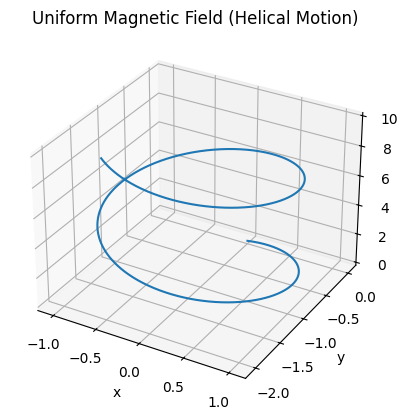
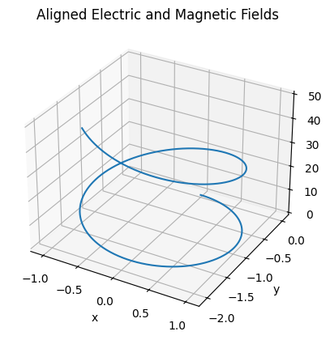
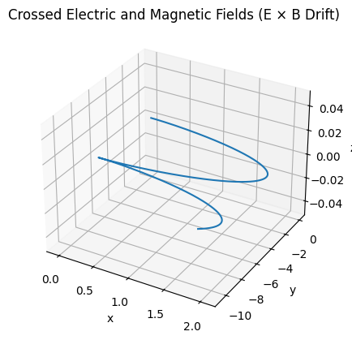

Problem 1
Applications of the Lorentz Force
1. Exploration of Applications
The Lorentz force, given by
$$
\vec{F} = q(\vec{E} + \vec{v} \times \vec{B}),
$$
describes the total force on a charged particle of charge \(q\), moving with velocity \(\vec{v}\) in the presence of electric \(\vec{E}\) and magnetic \(\vec{B}\) fields.
Particle Accelerators
In linear accelerators (linacs) and cyclotrons, electric fields are used to accelerate particles, while magnetic fields control their trajectories.
- For particles moving perpendicular to a uniform magnetic field:
$$ F = qvB \Rightarrow \frac{mv^2}{r} = qvB \Rightarrow r = \frac{mv}{qB} $$ - Radius of curvature \(r\) increases with velocity \(v\), thus magnetic fields provide velocity-dependent steering.
Mass Spectrometers
Mass spectrometry relies on separating ions by their mass-to-charge ratio \(\frac{m}{q}\) using the Lorentz force.
- Charged ions entering a region with \(\vec{E} = 0\) and uniform \(\vec{B}\) field perpendicular to velocity:
$$ r = \frac{mv}{qB} $$ - With kinetic energy imparted by a known potential \(V\):
$$ \frac{1}{2}mv^2 = qV \Rightarrow v = \sqrt{\frac{2qV}{m}} \Rightarrow r = \frac{\sqrt{2mV}}{qB} $$ - Measured radius \(r\) allows determination of \(m/q\): $$ \frac{m}{q} = \frac{r^2 B^2}{2V} $$
Plasma Confinement
In tokamaks and stellarators, magnetic fields are crucial for confining high-energy plasma.
- In the absence of electric field, charged particles exhibit helical motion around magnetic field lines: $$ \text{Gyrofrequency: } \omega_c = \frac{qB}{m}, \quad \text{Larmor radius: } r_L = \frac{mv_\perp}{qB} $$
-
The Lorentz force prevents charged particles from escaping perpendicularly, while toroidal magnetic fields maintain containment.
-
E×B drift occurs when both \(\vec{E}\) and \(\vec{B}\) are present: $$ \vec{v}_{E \times B} = \frac{\vec{E} \times \vec{B}}{B^2} $$ This drift is independent of charge and mass.
-
Magnetic mirrors exploit varying \(B\) field strengths: $$ \mu = \frac{mv_\perp^2}{2B} = \text{constant} \Rightarrow \text{confinement via reflection at high } B $$
Role of Fields in Charged Particle Motion
- Electric fields do work on particles:
$$ \vec{F}_E = q\vec{E}, \quad W = qEd $$ - Magnetic fields alter direction, not speed:
$$ \vec{F}_B = q\vec{v} \times \vec{B}, \quad \vec{v} \cdot \vec{F}_B = 0 $$ - Combined fields produce complex motion:
- Spiral/helical paths
- Cyclotron resonance when \(\omega = \omega_c\)
- Cross-field drifts critical in fusion and space physics
2. Parameter Exploration
Analyzing the effects of varying physical parameters in the Lorentz force
$$
\vec{F} = q(\vec{E} + \vec{v} \times \vec{B})
$$
provides insights into charged particle dynamics under controlled experimental or simulated conditions.
Electric and Magnetic Field Strengths \((\vec{E}, \vec{B})\)
- Electric Field \(\vec{E}\):
Alters particle kinetic energy directly: $$ \vec{F}_E = q\vec{E}, \quad a = \frac{q\vec{E}}{m}, \quad \Delta v = \frac{q\vec{E}}{m} \Delta t $$ - Linear acceleration for uniform \(\vec{E}\)
-
Direction depends on the sign of \(q\)
-
Magnetic Field \(\vec{B}\):
Influences trajectory curvature, not speed: $$ \vec{F}B = q\vec{v} \times \vec{B}, \quad r = \frac{mv\perp}{qB}, \quad \omega_c = \frac{qB}{m} $$ - Stronger \(B\) \(\Rightarrow\) tighter curvature
- Direction follows right-hand rule (positive \(q\))
Initial Particle Velocity \(\vec{v}\)
- Magnitude of \(\vec{v}\) affects both electric and magnetic interactions: $$ |\vec{F}_B| = qvB \sin\theta $$
- \(\theta = 90^\circ\) maximizes magnetic force
-
For \(\vec{v} \parallel \vec{B}\), no magnetic deflection occurs
-
Particle speed \(v\) determines:
- Radius of curvature \(r\)
- Helical pitch in combined \(\vec{E}\) and \(\vec{B}\) fields
- Energy gained via \(\vec{E}\): \(K = \frac{1}{2}mv^2\)
Particle Charge and Mass \((q, m)\)
- Charge \(q\):
- Sign affects force direction: \(\vec{F} \propto q\)
-
Magnitude scales force linearly: $$ \vec{F} \propto q, \quad r \propto \frac{1}{q} $$
-
Mass \(m\):
- Influences inertia, acceleration response: $$ a = \frac{F}{m}, \quad r \propto m, \quad \omega_c \propto \frac{1}{m} $$
Trajectory Response to Parameter Changes
Case Studies:
-
Increase \(E\):
→ Faster acceleration along field lines, linear velocity growth. -
Increase \(B\):
→ Decreased gyro-radius \(r\), increased cyclotron frequency \(\omega_c\). -
Increase \(v_\perp\):
→ Larger \(r\), wider spiral. -
Switch sign of \(q\):
→ Force vector reverses; trajectory curves in opposite direction. -
Increase \(m\):
→ Slower acceleration, wider spiral path due to increased inertia.
Tracking Motion
Use numerical methods (e.g., Runge-Kutta) to integrate:
$$
\frac{d\vec{v}}{dt} = \frac{q}{m}(\vec{E} + \vec{v} \times \vec{B})
$$
and
$$
\frac{d\vec{r}}{dt} = \vec{v}
$$
Trajectory sensitivity analysis is vital in: - Plasma control - Ion-beam focusing - Spacecraft propulsion simulations
Code and Plots
Website with simulation
Uniform Magnetic Field Only (Helical Motion)

# Case (a): Uniform Magnetic Field Only (Helical Motion)
import numpy as np
import matplotlib.pyplot as plt
from mpl_toolkits.mplot3d import Axes3D
# Lorentz force
def lorentz_force(q, m, E, B, v):
return (q / m) * (E + np.cross(v, B))
# Euler method
def simulate_particle(q, m, E, B, v0, r0, dt, steps):
v = np.array(v0, dtype=float)
r = np.array(r0, dtype=float)
positions = [r.copy()]
for _ in range(steps):
a = lorentz_force(q, m, E, B, v)
v += a * dt
r += v * dt
positions.append(r.copy())
return np.array(positions)
# 3D plot
def plot_3d(positions, title='3D Trajectory'):
fig = plt.figure()
ax = fig.add_subplot(111, projection='3d')
ax.plot(positions[:,0], positions[:,1], positions[:,2])
ax.set_xlabel('x')
ax.set_ylabel('y')
ax.set_zlabel('z')
ax.set_title(title)
plt.show()
# Parameters
q = 1.0
m = 1.0
B = np.array([0, 0, 1])
E = np.array([0, 0, 0])
v0 = [1, 0, 1]
r0 = [0, 0, 0]
dt = 0.01
steps = 1000
# Run simulation
positions = simulate_particle(q, m, E, B, v0, r0, dt, steps)
plot_3d(positions, title='Uniform Magnetic Field (Helical Motion)')
Aligned Electric and Magnetic Fields

# Case (b): Aligned Electric and Magnetic Fields
import numpy as np
import matplotlib.pyplot as plt
from mpl_toolkits.mplot3d import Axes3D
def lorentz_force(q, m, E, B, v):
return (q / m) * (E + np.cross(v, B))
def simulate_particle(q, m, E, B, v0, r0, dt, steps):
v = np.array(v0, dtype=float)
r = np.array(r0, dtype=float)
positions = [r.copy()]
for _ in range(steps):
a = lorentz_force(q, m, E, B, v)
v += a * dt
r += v * dt
positions.append(r.copy())
return np.array(positions)
def plot_3d(positions, title='3D Trajectory'):
fig = plt.figure()
ax = fig.add_subplot(111, projection='3d')
ax.plot(positions[:,0], positions[:,1], positions[:,2])
ax.set_xlabel('x')
ax.set_ylabel('y')
ax.set_zlabel('z')
ax.set_title(title)
plt.show()
q = 1.0
m = 1.0
B = np.array([0, 0, 1])
E = np.array([0, 0, 1])
v0 = [1, 0, 0]
r0 = [0, 0, 0]
dt = 0.01
steps = 1000
positions = simulate_particle(q, m, E, B, v0, r0, dt, steps)
plot_3d(positions, title='Aligned Electric and Magnetic Fields')
Crossed Electric and Magnetic Fields (E × B Drift)

# Case (c): Crossed Electric and Magnetic Fields (E × B Drift)
import numpy as np
import matplotlib.pyplot as plt
from mpl_toolkits.mplot3d import Axes3D
def lorentz_force(q, m, E, B, v):
return (q / m) * (E + np.cross(v, B))
def simulate_particle(q, m, E, B, v0, r0, dt, steps):
v = np.array(v0, dtype=float)
r = np.array(r0, dtype=float)
positions = [r.copy()]
for _ in range(steps):
a = lorentz_force(q, m, E, B, v)
v += a * dt
r += v * dt
positions.append(r.copy())
return np.array(positions)
def plot_3d(positions, title='3D Trajectory'):
fig = plt.figure()
ax = fig.add_subplot(111, projection='3d')
ax.plot(positions[:,0], positions[:,1], positions[:,2])
ax.set_xlabel('x')
ax.set_ylabel('y')
ax.set_zlabel('z')
ax.set_title(title)
plt.show()
q = 1.0
m = 1.0
B = np.array([0, 0, 1])
E = np.array([1, 0, 0])
v0 = [0, 0, 0]
r0 = [0, 0, 0]
dt = 0.01
steps = 1000
positions = simulate_particle(q, m, E, B, v0, r0, dt, steps)
plot_3d(positions, title='Crossed Electric and Magnetic Fields (E × B Drift)')